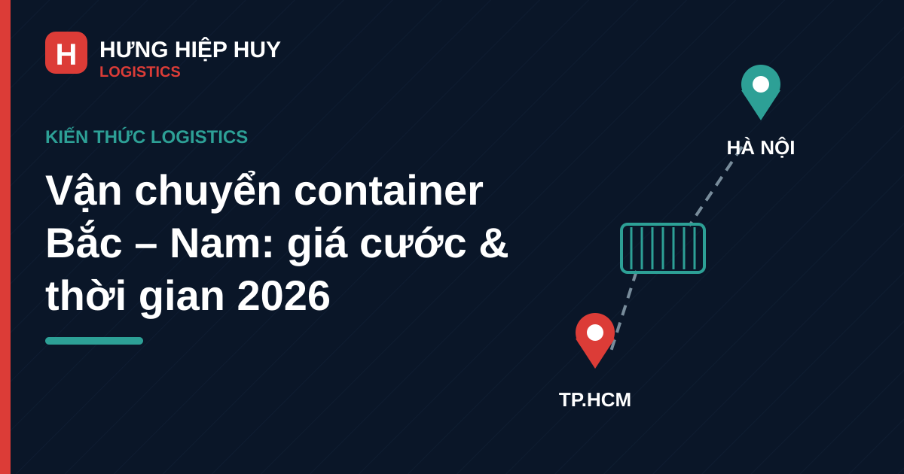

Vận chuyển container Bắc – Nam: giá cước, thời gian và cách tiết kiệm chi phí

Hằng ngày, hàng nghìn container hàng hóa di chuyển dọc theo quốc lộ 1A và cao tốc Bắc – Nam, nối hai đầu kinh tế lớn nhất cả nước là Hà Nội và TP.HCM, đi qua dải công nghiệp – cảng biển miền Trung. Với doanh nghiệp sản xuất, nhà phân phối và chủ hàng, tuyến Bắc – Nam là bài toán chi phí hàng đầu: chọn đúng phương thức, đúng loại container và đúng thời điểm có thể chênh lệch chi phí cả chục triệu đồng mỗi container.
Bài viết tổng hợp kinh nghiệm thực tế: so sánh 3 phương thức, thời gian và giá cước tham khảo từng tuyến, các yếu tố ảnh hưởng đến giá, và cách tiết kiệm chi phí cho chủ hàng.
1. Tuyến Bắc – Nam: xương sống của vận tải container nội địa
Tuyến Bắc – Nam là hành lang vận tải huyết mạch, kết nối hệ thống cảng biển, khu công nghiệp và trung tâm tiêu thụ lớn nhất Việt Nam: cụm cảng Hải Phòng – Quảng Ninh ở phía Bắc, cảng Đà Nẵng – Quảng Nam ở miền Trung, và cụm cảng Cát Lái – Cái Mép – Thị Vải ở phía Nam.
Đặc biệt, Đà Nẵng nằm ở vị trí trung điểm của tuyến, là điểm trung chuyển tự nhiên cho hàng hóa hai chiều. Hàng từ các nhà máy miền Bắc vào Nam, hàng từ TP.HCM ra Bắc đều phải đi qua miền Trung — và nhiều chủ hàng chọn Đà Nẵng làm điểm tập kết, gom hàng hoặc chia hàng trước khi tiếp tục hành trình. Đây cũng là lý do các tuyến Đà Nẵng – Hà Nội và Đà Nẵng – TP.HCM có lưu lượng container ổn định quanh năm.
2. Ba phương thức vận chuyển container Bắc – Nam: so sánh đầy đủ
2.1. Đường bộ — nhanh nhất, linh hoạt nhất
Vận chuyển container bằng đường bộ (xe đầu kéo) là phương thức phổ biến nhất tuyến Bắc – Nam, với ưu điểm lớn nhất là giao nhận tận nơi: xe lấy container tại kho chủ hàng và chạy thẳng đến điểm trả, không cần trung chuyển.
Về phương tiện, container khô 20ft và 40ft là loại dùng nhiều nhất trên tuyến này. Chủ hàng cần phân biệt đúng kích thước và đặc điểm từng loại container 20ft, 40ft và 40HC để chọn đúng loại hàng, tránh trả tiền cho dung tích không dùng đến.
Nhược điểm của đường bộ là giá cước cao nhất trong 3 phương thức và phụ thuộc nhiều vào giá nhiên liệu, phí cầu đường, cũng như tình trạng thời tiết và kẹt xe trên các đoạn cao tốc.
2.2. Đường sắt — rẻ và ổn định cho hàng nặng
Đường sắt phù hợp với hàng nặng, hàng không yêu cầu thời gian gấp và các lô hàng đều đặn giữa các ga lớn (Ga Giáp Bát/Đông Anh – Ga Đà Nẵng/Kim Liên – Ga Sóng Thần/Trảng Bom). Giá cước đường sắt thường thấp hơn đường bộ đáng kể, đặc biệt với container 40ft chở hàng nặng trên 13 tấn.
Hạn chế là hàng phải trung chuyển tại hai đầu ga (xe lấy từ kho ra ga và từ ga về kho người nhận), nên tổng thời gian door-to-door dài hơn, và chủ hàng phải chấp nhận lịch tàu cố định thay vì chạy theo giờ mình cần.
2.3. Đường biển — rẻ nhất cho khối lượng lớn
Vận chuyển container nội địa bằng đường biển (tuyến Hải Phòng – Đà Nẵng – Cát Lái) có giá cước rẻ nhất, phù hợp với hàng khối lượng lớn, không gấp thời gian, và hàng có thể chịu được thời gian lưu kho tại cảng. Tuy nhiên, thời gian hành trình dài nhất (4–7 ngày), cộng thêm thủ tục tại cảng hai đầu và phí nâng/hạ container.
Tóm lại: cần nhanh và linh hoạt → đường bộ; hàng nặng, tiết kiệm → đường sắt; khối lượng lớn, không gấp → đường biển.
3. Thời gian vận chuyển container Bắc – Nam theo từng tuyến
Thời gian dưới đây là tham khảo thực tế thị trường năm 2026 theo từng phương thức:
| Tuyến | Đường bộ (door-to-door) | Đường sắt (ga – ga) | Đường biển (cảng – cảng) |
|---|---|---|---|
| Hà Nội ↔ TP.HCM | 2–3 ngày | 3–5 ngày | 4–7 ngày |
| Đà Nẵng ↔ Hà Nội | 1–2 ngày | 1–2 ngày (ga – ga) | 3–4 ngày |
| Đà Nẵng ↔ TP.HCM | 1–2 ngày | 1–2 ngày (ga – ga) | 3–4 ngày |
Một số lưu ý thực tế về thời gian:
- Hàng ghép (gom nhiều chủ hàng chung một chuyến) thường chậm hơn hàng nguyên chuyến 1–2 ngày vì chờ gom đủ hàng và giao nhiều điểm.
- Quy định an toàn giao thông đường bộ yêu cầu tài xế nghỉ sau mỗi 4 giờ lái liên tục; tình trạng thiếu tài xế đầu kéo kéo dài có thể khiến thời gian tuyến Bắc – Nam bị kéo dài thêm — chủ hàng nên dự phòng thời gian cho các đơn hàng gấp.
- Thời tiết miền Trung (bão, lũ vào mùa mưa) có thể ảnh hưởng đến tiến độ đường bộ và đường biển; nên theo dõi dự báo thời tiết khi lên kế hoạch vận chuyển vào các tháng cuối năm.
4. Giá cước vận chuyển container Bắc – Nam tham khảo năm 2026
Giá cước tham khảo dưới đây là số liệu thị trường đường bộ cho container 40ft khô (hàng nặng trên 13 tấn), cập nhật theo bảng giá công khai của các đơn vị vận tải lớn năm 2026. Giá thực tế biến động theo thời điểm, giá nhiên liệu và đặc thù từng lô hàng — chủ hàng nên lấy báo giá trực tiếp cho từng chuyến.
| Tuyến (đường bộ, cont 40ft) | Giá tham khảo | Thời gian |
|---|---|---|
| Đà Nẵng → Hà Nội / Bắc Ninh / Bắc Giang | 17–19 triệu đồng | 1–2 ngày |
| Đà Nẵng → TP.HCM / Long An / Đồng Nai | 18–19 triệu đồng | 1–2 ngày |
| Hà Nội → TP.HCM | 35–37 triệu đồng | 2–3 ngày |
| TP.HCM → Hà Nội | 28–30 triệu đồng | 2–3 ngày |
| TP.HCM → Đà Nẵng | 20–22 triệu đồng | 1–2 ngày |
Để hiểu rõ vì sao cùng một tuyến mà giá mỗi đơn vị báo khác nhau, chủ hàng nên xem thêm bài cách tính cước vận chuyển container nội địa và các yếu tố ảnh hưởng.
5. 5 yếu tố ảnh hưởng trực tiếp đến giá cước
1. Khoảng cách và tuyến đường cụ thể. Không chỉ điểm đầu – điểm cuối, mà cả vị trí kho lấy/trả hàng so với trục chính cũng ảnh hưởng: kho nằm xa quốc lộ, phải chạy thêm đường tỉnh hoặc vào khu công nghiệp xa, giá sẽ cao hơn.
2. Loại container và trọng lượng hàng. Cont 20ft và 40ft có giá khác nhau; hàng nặng, hàng cần chằng buộc đặc biệt hoặc hàng quá khổ quá tải sẽ phát sinh chi phí riêng.
3. Chiều hàng và tình trạng xe hai chiều. Tuyến có hàng hai chiều (ví dụ TP.HCM – Hà Nội) thường có giá cạnh tranh hơn vì xe không phải chạy rỗng chiều về.
4. Thời điểm trong năm. Mùa cao điểm (cuối năm, Tết, mùa xuất khẩu nông sản) giá cước thường tăng do khan xe. Đặt hàng sớm trước mùa cao điểm là cách đơn giản nhất để giữ giá tốt.
5. Dịch vụ đi kèm. Phí nâng/hạ tại cảng, phí bốc xếp, phí lưu container, bảo hiểm hàng hóa, phí lưu ca xe khi giao nhận chậm — các khoản này cộng lại có thể chênh lệch hàng triệu đồng mỗi chuyến.
6. 6 cách tiết kiệm chi phí vận chuyển container Bắc – Nam
1. Đóng hàng đúng loại container, đủ tải. Chọn cont 20ft hay 40ft phải dựa trên khối lượng và thể tích thực tế của lô hàng. Container chạy non tải là lãng phí tiền cước rõ rệt nhất.
2. Ưu tiên hàng nguyên chuyến khi đủ số lượng. Hàng ghép rẻ cho lô nhỏ, nhưng với lô đủ một container, nguyên chuyến thường rẻ hơn trên mỗi đơn vị hàng và nhanh hơn 1–2 ngày.
3. Tận dụng chuyến hai chiều. Nếu doanh nghiệp có hàng cả chiều đi và chiều về (hoặc gom được hàng về cho đối tác), giá mỗi chiều có thể giảm đáng kể so với thuê xe một chiều.
4. Chọn phương thức phù hợp với tính chất hàng. Hàng nặng, không gấp → đường sắt hoặc đường biển tiết kiệm hơn đường bộ rất nhiều. Đừng mặc định dùng đường bộ cho mọi lô hàng.
5. Đặt xe sớm, tránh mùa cao điểm. Với các lô hàng định kỳ, ký hợp đồng dài hạn hoặc đặt lịch sớm trước 1–2 tuần giúp giữ giá ổn định, đặc biệt vào cuối năm.
6. Chọn đơn vị vận chuyển có đội xe thực và kinh nghiệm tuyến. Đơn vị có xe chạy thường xuyên tuyến Bắc – Nam, đặc biệt có điểm tập kết ở Đà Nẵng, sẽ chủ động ghép hàng hai chiều và xử lý sự cố dọc đường tốt hơn. Xem thêm kinh nghiệm chọn đơn vị vận chuyển container nội địa để tránh các rủi ro thường gặp.
7. Những lưu ý quan trọng khi gửi hàng tuyến Bắc – Nam
- Giấy tờ và thông tin hàng hóa rõ ràng: chuẩn bị đầy đủ thông tin gửi – nhận, loại hàng, trọng lượng, giá trị hàng để làm vận đơn. Với hàng xuất khẩu đi tiếp sang Lào, tham khảo thêm thủ tục hải quan xuất khẩu sang Lào.
- Đóng gói và chằng buộc chắc chắn: quãng đường Bắc – Nam dài, xe chạy qua nhiều địa hình; hàng dễ vỡ, hàng máy móc cần chằng buộc và lót chống sốc kỹ lưỡng.
- Bảo hiểm hàng hóa: với hàng giá trị cao, nên mua bảo hiểm vận chuyển cho quãng đường dài — chi phí nhỏ so với rủi ro mất mát, hư hỏng.
- Theo dõi hành trình: yêu cầu đơn vị vận chuyển cập nhật vị trí xe định kỳ, đặc biệt với hàng gấp hoặc hàng giá trị cao.
- Kiểm tra container trước khi xếp hàng: container phải sạch, khô, không thủng, cửa đóng kín và gioăng còn tốt — nhất là với hàng điện tử, thực phẩm khô.
8. Kết luận
Vận chuyển container tuyến Bắc – Nam không chỉ là chuyện giá rẻ hay đắt, mà là bài toán cân đối giữa thời gian, chi phí và độ an toàn của hàng hóa. Nắm rõ đặc điểm từng phương thức, hiểu các yếu tố cấu thành giá cước và áp dụng những cách tiết kiệm trên, chủ hàng hoàn toàn có thể giảm 10–20% chi phí logistics mỗi năm mà vẫn đảm bảo tiến độ.
Cần báo giá vận chuyển container tuyến Bắc – Nam?
Liên hệ Hưng Hiệp Huy Logistics — Hotline/Zalo: 0901 995 665 — Email: hiepnguyen.hunghiephuy@gmail.com. Gửi thông tin lô hàng để nhận báo giá rõ ràng từng khoản và phương án vận chuyển phù hợp.
Bài viết liên quan: Cước vận chuyển container nội địa: cách tính và các yếu tố ảnh hưởng · Thuê xe đầu kéo container nội địa: kinh nghiệm chọn nhà vận chuyển · Vận chuyển container nội địa từ cảng Đà Nẵng đi các tỉnh